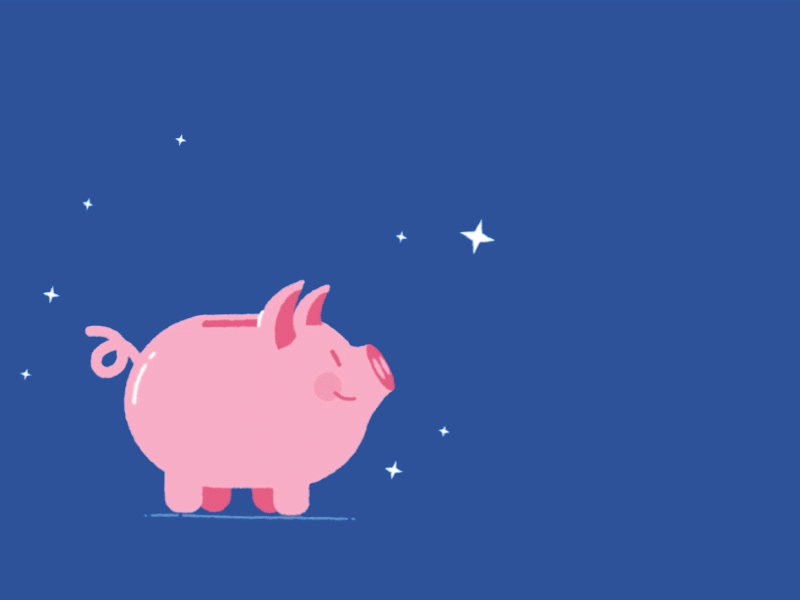

Services
-

At Baon Save, we educate students assurance they need to manage their money. With its user-friendly tools for tracking spending, creating savings objectives, and forming prudent budgeting practices, our website aims to make allowance management easier. We offer educational materials, interactive manuals, and real-time insights to assist students in making wise decisions being that we think financial literacy begins early. Baon Save turns regular savings into lifelong skills with its safe, accessible features, such as specific spending categories and success reports. One baon (allowance) at a time, help us promote financial independence.
-
Baon Save is dedicated to equipping students with the fundamental financial knowledge they need for a better future. Our platform is made to make learning about finances interesting and approachable as we recognize how important it is to manage resources wisely from an early age. Our objective is to foster responsible spending practices and advance long-term financial well-being by offering useful resources and instructional materials.
-
Baon Save conveys students the resources and tools they need to properly manage their money. We provide an easy-to-use platform for budgeting, goal-setting, and spending tracking. Our interactive tools and instructional materials encourage financial literacy and independence by enabling students to make wise financial decisions.